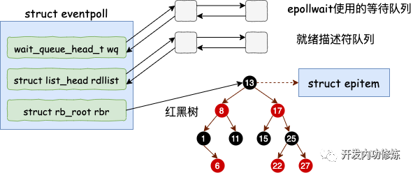

第3章-内核是如何与用户进程协作的
socket的直接创建
socket的系统调用如下
inet_create(struct net * net, struct socket * sock, int protocol, int kern) (\home\ubuntu\linux-4.6.2\net\ipv4\af_inet.c:263)
__sock_create(struct net * net, int family, int type, int protocol, struct socket ** res, int kern) (\home\ubuntu\linux-4.6.2\net\socket.c:1160)
sock_create(int family, int type, int protocol, struct socket ** res) (\home\ubuntu\linux-4.6.2\net\socket.c:1200)
socket(AF_INET, SOCK_DGRAM, 0) // 创建UDP的socket
|-SYSC_socket(family = 2, type = 2, protocol = 0)
|-sock_create(family, type, protocol, &sock)
|-__sock_create(net, family, type, protocol, res, 0)
|-sock = sock_alloc() // 创建socket对象
|-pf = rcu_dereference(net_families[family]) // 通过family获取对应的协议族
|-pf->create(net, sock, protocol, kern) // 调用协议族的create函数，即inet_create
|-inet_create(net, sock, protocol, kern)
|-sock->ops = answer->ops; // 设置socket->ops
|-answer_prot = answer->prot; // answer_prot=udp_prot
|-sk = sk_alloc(net, PF_INET, GFP_KERNEL, answer_prot, kern) // 创建sk对象，并设置sk.sk_prot=answer_prot
|-sock_init_data(sock, sk)
|-sk->sk_data_ready = sock_def_readable // 软中断收到数据包会调用此函数唤醒等待的进程
内核和用户进程协作之阻塞方式
read(fd, buf, 1024) // 读取tcp socket上的数据
|-SYSC_read(fd, buf, 1024)
|-vfs_read(f.file, buf, count, &pos)
|-__vfs_read(file, buf, count, pos)
|-new_sync_read(file, buf, count, pos)
|-filp->f_op->read_iter(&kiocb, &iter)
|-sock_recvmsg(sock, &msg, iov_iter_count(to), msg.msg_flags)
|-sock_recvmsg_nosec(sock, msg, size, flags)
|-sock->ops->recvmsg(sock, msg, size, flags) // 这里即是inet_recvmsg
|-inet_recvmsg(sock, msg, size, flags)
|-sk->sk_prot->recvmsg(sk, msg, size, flags & MSG_DONTWAIT, flags & ~MSG_DONTWAIT, &addr_len)
|-tcp_recvmsg(sk, msg, size, noblock, flags, &addr_len)
|-sk_wait_data(sk, &timeo, last) // 没有收到足够数据，阻塞当前进程
sk_wait_data是如何阻塞当前进程的
#define DEFINE_WAIT_FUNC(name,function) wait_queue_t name = {
.private = current,
.func = function,
.task_list = LIST_HEAD_INIT((name).task_list)
}
sk_wait_data(sk, &timeo, skb)
|-DEFINE_WAIT(wait) // 展开为：DEFINE_WAIT_FUNC(wait, autoremove_wake_function)，创建一个等待对象wait
|-sk_sleep(sk) // 获取当前socket的等待列表
|-prepare_to_wait(sk_sleep(sk), &wait, TASK_INTERRUPTIBLE) // 把wait插入等待列表
|-sk_wait_event(sk, timeo, condition) // 让出CPU，进程将进入睡眠状态
|-schedule_timeout(timeo)
|-schedule()
软中断模块
tcp的软中断在tcp_v4_rcv后会执行tcp_queue_rcv和sock_def_readable
tcp_queue_rcv(sk, skb, tcp_header_len, &fragstolen)
|-__skb_queue_tail(&sk->sk_receive_queue, skb) // 把skb放在sk的接收链表的尾部
sock_def_readable(sk)
|-wq = rcu_dereference(sk->sk_wq) // 获取sk->sk_wq
|-wake_up_interruptible_sync_poll(&wq->wait, key) // 即__wake_up_sync_key
|-__wake_up_sync_key(&wq->wait, mode=1, nr_exclusive=1, key)
|-__wake_up_common(q, mode, nr_exclusive, wake_flags, key)
|-curr->func(curr, mode, wake_flags, key) // 在define DEFINE_WAIT语句中，curr->func设置为了autoremove_wake_function
autoremove_wake_function(wait, mode, sync, key)
|-default_wake_function(wait, mode, sync, key)
|-try_to_wake_up(curr->private, mode, wake_flags) // 唤醒因为等待而被阻塞的进程
accept创建新socket

static const struct file_operations socket_file_ops = {
.read_iter = sock_read_iter,
.write_iter = sock_write_iter,
.poll = sock_poll,
.release = sock_close,
};
SYSCALL_DEFINE4(accept4, int, fd, struct sockaddr __user *, upeer_sockaddr, int __user *, upeer_addrlen, int, flags)
|-sock = sockfd_lookup_light(fd, &err, &fput_needed) // 通过fd找到监听的socket
|-newsock = sock_alloc() // 创建一个新的socket
|-newsock->type = sock->type
|-newsock->ops = sock->ops // 直接把监听的socket的ops方法赋值给新的socket
|-newfile = sock_alloc_file(newsock, flags, sock->sk->sk_prot_creator->name)
|-alloc_file(&path, mod, &socket_file_ops)
|-file->f_op = fop // file.f_op即是socket_file_ops
|-sock->ops->accept(sock, newsock, sock->file->f_flags) // 即是inet_accept
|-inet_accept(sock, newsock, sock->file->f_flags)
|-sk1 = sock->sk
|-sk1->sk_prot->accept(sk1, flags, &err) // 即是inet_csk_accept
|-inet_csk_accept(sk1, flags, &err)
|-reqsk_queue_remove(queue, sk1) // 握手队列里直接获取创建好的sock
|-fd_install(newfd, newfile) // 把newfile加到当前进程的打开文件列表
epoll内核对象的创建

SYSCALL_DEFINE1(epoll_create1, int, flags)
|-ep_alloc(&ep)
|-ep = kzalloc(sizeof(*ep), GFP_KERNEL) // 申请ep的内存
|-init_waitqueue_head(&ep->wq) // 初始化等待队列
|-INIT_LIST_HEAD(&ep->rdllist) // 初始化就绪列表
|-ep->rbr = RB_ROOT // 初始化红黑树指针
epoll添加socket
SYSCALL_DEFINE4(epoll_ctl, int, epfd, int, op, int, fd, struct epoll_event __user *, event)
|-ep_insert(ep, &epds, tf.file, fd, full_check)
|-epi = kmem_cache_alloc(epi_cache, GFP_KERNEL) // 分配并初始化epitem
|-epq.epi = epi
|-init_poll_funcptr(&epq.pt, ep_ptable_queue_proc)
|-ep_item_poll(epi, &epq.pt) // 设置回调是ep_poll_callback
|-epi->ffd.file->f_op->poll(epi->ffd.file, pt) // 即是sock_poll
|-sock_poll(epi->ffd.file, pt)
|-sock->ops->poll(file, sock, wait) // 即是tcp_poll
|-tcp_poll(file, sock, wait)
|-sock_poll_wait(file, sk_sleep(sk), wait)
|-poll_wait(filp, wait_address, p)
|-p->_qproc(filp, wait_address, p) // 即是ep_ptable_queue_proc
|-ep_ptable_queue_proc(filp, wait_address, p)
|-init_waitqueue_func_entry(&pwq->wait, ep_poll_callback) // 新建一个等待项，回调是ep_poll_callback
|-add_wait_queue(whead, &pwq->wait) // 插入sock的等待队列
|-ep_rbtree_insert(ep, epi) // 插入红黑树
epoll_wait之等待接收
SYSCALL_DEFINE4(epoll_wait, int, epfd, struct epoll_event __user *, events, int, maxevents, int, timeout)
|-ep_poll(ep, events, maxevents, timeout)
|-ep_events_available(ep) // 检查就绪队列上有没有事件就绪
|-init_waitqueue_entry(&wait, current) // 没有就定义等待事件
|-wait->func = default_wake_function
|-__add_wait_queue_exclusive(&ep->wq, &wait) // 把等待事件挂在ep->wq上
|-__add_wait_queue(&ep->wq, &wait)
|-schedule_hrtimeout_range(to, slack, HRTIMER_MODE_ABS) // 让出CPU，主动进入休眠
|-schedule_hrtimeout_range_clock(expires, delta, mode, CLOCK_MONOTONIC)
|-schedule()
|-__schedule(false)
|-context_switch(rq, prev, next)
|-ep_send_events(ep, events, maxevents) // 休眠的进程被唤醒：transfer events to user space
数据来了
硬中断->软中断->tcp_v4_rcv->sk->sk_data_ready(sk)，即sock_def_readable
sock_def_readable再执行curr->func(curr, mode, wake_flags, key)，这里的func在ep_insert时设置成了ep_poll_callback
ep_poll_callback(wait_queue_t *wait, unsigned mode, int sync, void *key)
|-epi = ep_item_from_wait(wait) // 获取epitem
|-ep = epi->ep // 获取对应的eventpoll结构体
|-list_add_tail(&epi->rdllink, &ep->rdllist) // 把epitem加到eventpoll的就绪队列
|-if (waitqueue_active(&ep->wq)) wake_up_locked(&ep->wq) // 如果eventpoll等待队列有等待进程，唤醒它
|-__wake_up_locked(&ep->wq, mode, nr)
|--__wake_up_common(q, mode, nr, 0, NULL)
|-curr->func(curr, mode, wake_flags, key) // 这里的func在epoll_wait时被设置为default_wake_function
default_wake_function(curr, mode, wake_flags, key)
|-try_to_wake_up(curr->private, mode, wake_flags) // 这里的curr->private就是休眠的进程